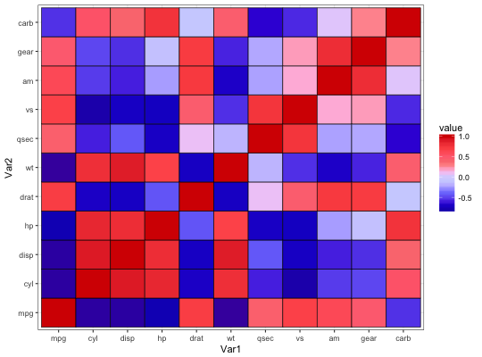

See pal_gsea for details.
scale_color_gsea(palette = c("default"), alpha = 1, reverse = FALSE, ...) scale_colour_gsea(palette = c("default"), alpha = 1, reverse = FALSE, ...) scale_fill_gsea(palette = c("default"), alpha = 1, reverse = FALSE, ...)
| palette | Palette type.
Currently there is one available option: |
|---|---|
| alpha | Transparency level, a real number in (0, 1].
See |
| reverse | Logical. Should the order of the colors be reversed? |
| ... | additional parameters for |
library("ggplot2") library("reshape2") data("mtcars") cor = cor(mtcars) cor_melt = melt(cor) ggplot(cor_melt, aes(x = Var1, y = Var2, fill = value)) + geom_tile(colour = "black", size = 0.3) + theme_bw() + scale_fill_gsea()